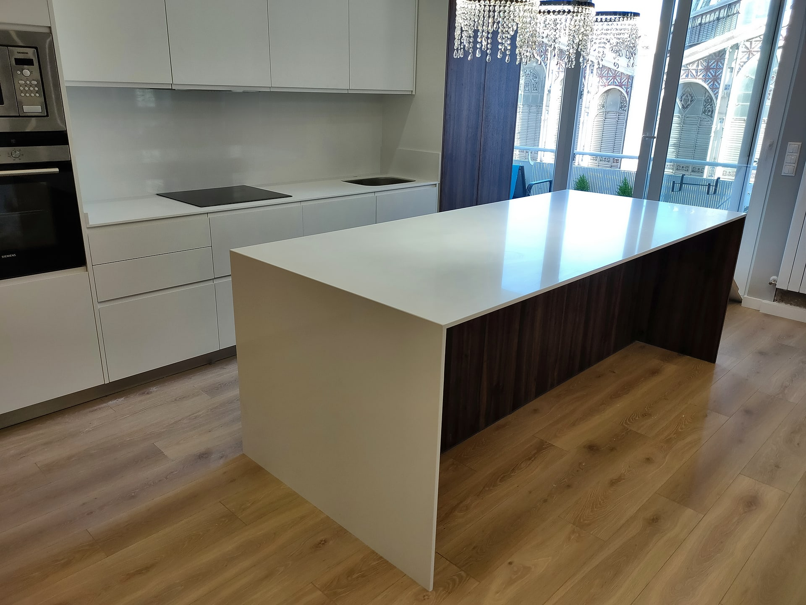
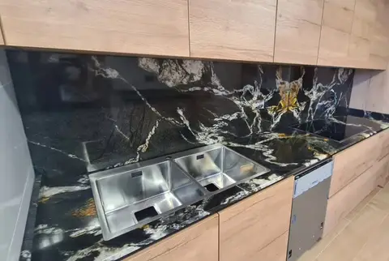
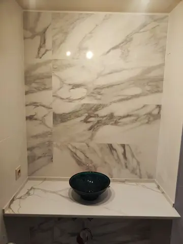
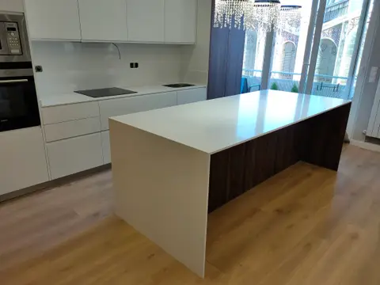

Marmolería en Beniparrell · Valencia
Encimeras y piedra a medida
Cocinas, baños, escaleras y piscinas en granito, mármol, cuarzo y porcelánico.
- 4,9Google
- 835fotos
- 306vídeos
Isla con laterales en cascada
Lo que hacemos
Trabajamos la piedra para cada rincón de la casa. Entra en cada servicio para ver todas las fotos y vídeos de ese tipo de trabajo.
Trabajos que nos gustan
Una selección de cocinas, baños, piscinas y mesas. La galería completa tiene 1141 fotos y vídeos, todos de obras reales.
Obra terminada, en vídeo
Más de 300 vídeos de encimeras recién montadas, para que veas el acabado de cerca.
Materiales
Cada piedra tiene su carácter. Te ayudamos a elegir según el uso, el estilo de tu casa y tu presupuesto.

Granito
Muy resistente al calor y a los golpes. Cada placa tiene un dibujo único, del negro con vetas doradas al gris clásico.

Mármol
La piedra natural de siempre, con vetas que no se repiten. Ideal para baños, escaleras y mesas.

Cuarzo
Superficie uniforme y poco porosa, fácil de limpiar. Una opción práctica para el día a día de la cocina.
Porcelánico
Gran formato con aspecto de mármol, resistente a manchas y calor. Permite islas con los laterales en cascada.
Cómo trabajamos
De la medición al montaje, una sola empresa se encarga de todo.
Medición
Tomamos medidas en tu casa y vemos dónde van la placa, el fregadero y los enchufes.
Material
Eliges la piedra y los detalles: grosor, canto, frentes y laterales.
Taller
Cortamos y pulimos cada pieza a medida en Beniparrell.
Montaje
Nuestros montadores instalan la encimera y la dejan sellada y limpia.
«Totalmente satisfecha con Marbres Chust por su profesionalidad y asesoramiento. Increíble el trabajo de Alejandro y Kevin, los montadores, muy profesionales. Lo recomiendo muchísimo.»
«Encantada con ellos, grandes profesionales, te asesoran en todo momento, cercanos, amables y de confianza, un 10. Los montadores, Bayron y Nando, profesionales, amables y con mucho cuidado para que todo quede perfecto.»
«Grandes profesionales y de confianza. Te aconsejan según lo que necesitas y siempre con gran criterio, además de tener un trato al cliente excelente. 100 % recomendables.»
«Te aconseja y te explica los productos más convenientes para una isla. Muy buena atención.»
Pide tu presupuesto
Cuéntanos qué necesitas. Si tienes las medidas o alguna foto de la cocina o el baño, mejor: así el presupuesto sale más ajustado.
- Teléfono
- 644 23 99 80
- Dirección
- Camí Vell d'Albal, 113, bajo
46469 Beniparrell (Valencia)
Cómo llegar - Lunes a jueves
- 8:00 – 18:00
- Viernes
- 8:00 – 16:30
- Sábado y domingo
- Cerrado
Preguntas frecuentes
Si te queda alguna duda, llámanos al 644 23 99 80.
¿Hacéis presupuestos?
Sí. Llámanos al 644 23 99 80 o escríbenos desde el formulario con las medidas y alguna foto de tu cocina o baño, y te preparamos el presupuesto.
¿Con qué materiales trabajáis?
Granito, mármol, cuarzo y porcelánico de gran formato. Cada uno tiene sus ventajas; te aconsejamos según el uso y el presupuesto.
¿Dónde estáis y qué horario tenéis?
En el Camí Vell d'Albal, 113, bajo, 46469 Beniparrell (Valencia). De lunes a jueves de 8:00 a 18:00 y los viernes de 8:00 a 16:30.
¿Puedo ver trabajos reales?
Sí: en la galería están todas las fotos y vídeos que hemos publicado de nuestras obras, ordenados de la más reciente a la más antigua.